Prototip funksional · Hapi tjetër: testi në terren
Përparimi në plan, nga foto të zakonshme.
WorkGuardAI vlerëson sa ka përparuar puna kundrejt planit, nga fotot që ekipi juaj bën tashmë, dhe e tregon pikë pas pike në hartë.
Të dhëna shembull
Problemi
Përparimi ende kontrollohet duke ecur nëpër kantier.
Dikush del, mat me dorë dhe e shkruan në një raport. Kur raporti lexohet, puna ka ecur më tej.
Ecni dhe matni
Kontrolli i përparimit do të thotë të shkosh në çdo pikë me metër ose nivelues.
Shkruajeni
Rezultatet kopjohen me dorë në tabela dhe raporte.
Mësoni vonë
Kur një pjesë mbetet pas, mund të kalojnë ditë para se dikush ta dijë.
Si funksionon
Nga një foto te përparimi në plan.
Ekipi juaj vazhdon të bëjë foto si zakonisht. WorkGuardAI e lidh secilën me një pikë në plan dhe vlerëson sa ka përparuar puna.
Foto
Një kamera kantieri, telefon ose dron bën një foto të zakonshme.
Plani juaj
Fotoja lidhet me një koordinatë në planin tuaj DWG, pranë thellësisë së planifikuar.
Përparimi në hartë
Thellësia e vlerësuar krahasohet me planin, pikë pas pike, me njoftim kur një pikë mbetet pas.
Të dhëna shembull
Formatet e planit
Plani juaj, në formatin që keni.
I pavarur nga formati sipas projektimit: një model i brendshëm koordinatash plus importues. DWG funksionon sot; formatet e tjera janë të planifikuara.
- DWGSot
- IFCPlanifikuar
- LandXMLPlanifikuar
- Retë e pikavePlanifikuar
Arritjet
Nga një ide te një prototip funksional, dhe më tej te pilotët e parë.
Deri tani
- Nov 24NEXUS Incubator, HelsinkiPërfundoi programin gjashtëmujor të Helsinki Incubators.
- Oct 25Sfida Circular BuildingsHelsinki, Espoo dhe Vantaa: në listën e ngushtë për të dorëzuar ofertë.
- Nov 25Helsinki IncubatorsNë Slush 2025 mes alumnëve të Helsinki Incubators.
- Dec 25MVP u përfunduaNjë prototip funksional që lexon planin DWG dhe vlerëson thellësinë nga fotot.
- Feb 268 000 € financim programiNga Baltic Impact Accelerator i LUT University, Interreg Central Baltic, i bashkëfinancuar nga BE.
- May 26VINCI EnergiesShprehu interes pas një shqyrtimi fillestar.
Ku po shkojmë
- TjetërTesti në terrenNë një kantier aktiv, duke krahasuar vlerësimet me matjet topografike.
- 2027Pilotët e parëFinlandë dhe vendet nordike.
- PastajRajoni dhe EvropaRritje nga baza nordike.
- 2030Lojtar globalAmbicia jonë për 2030.
Plane, jo angazhime.
Në skenë
Ku kemi prezantuar.
-
MeOut Summit · BudapestHungari
E përzgjedhur si një nga 20 startup-et për të prezantuar në skenë, 25–26 nëntor 2026.Prezantoi në skenë në Pitch Marathon, nëntor 2026.
-
AIREX 2026 · BakuAzerbajxhan
Prezantoi në PropTech Competition, 6 nëntor 2026.
-
Sisu Factory · HelsinkiFinlandë
Fitoi Sauna Pitching, 24 shkurt 2025.

AIREX 2026 në fotografi
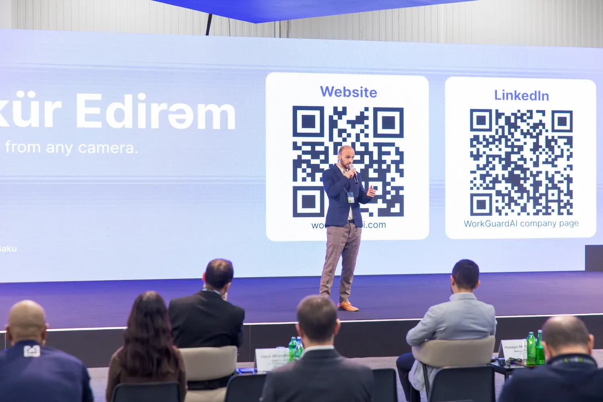
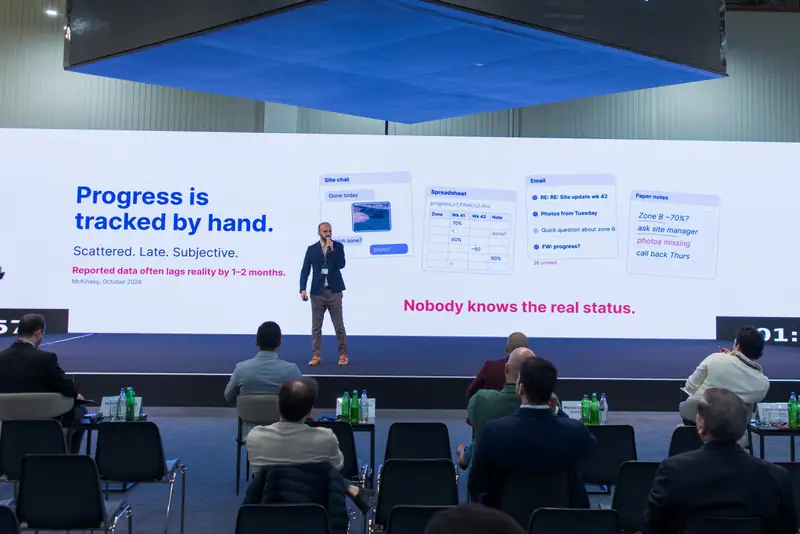
Progresi ndiqet me dorë 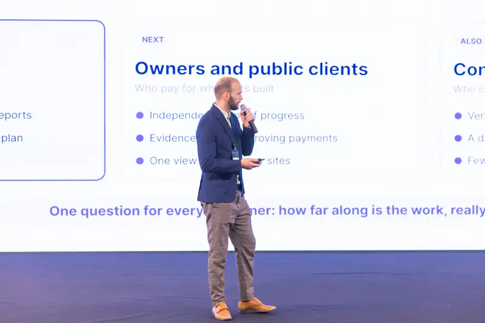
Pronarët dhe klientët publikë 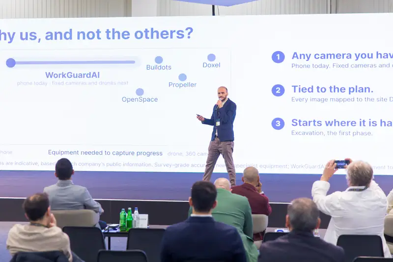
Pse ne, dhe jo të tjerët? 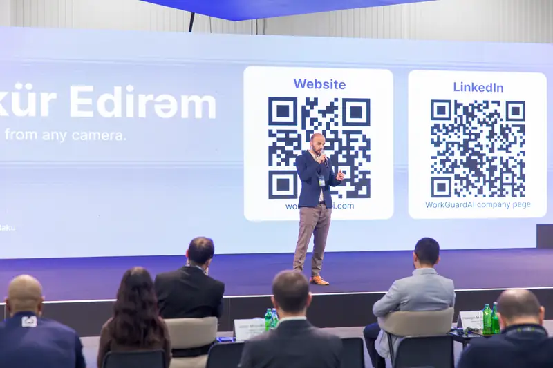
Faleminderit, me dy kode QR 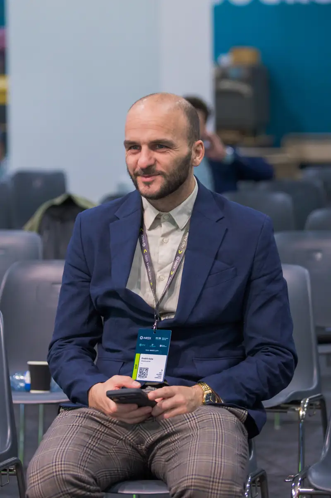
Duke pritur fillimin e sesionit 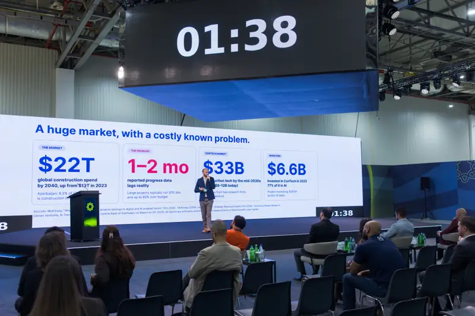
Një treg i madh, me një problem të njohur e të kushtueshëm 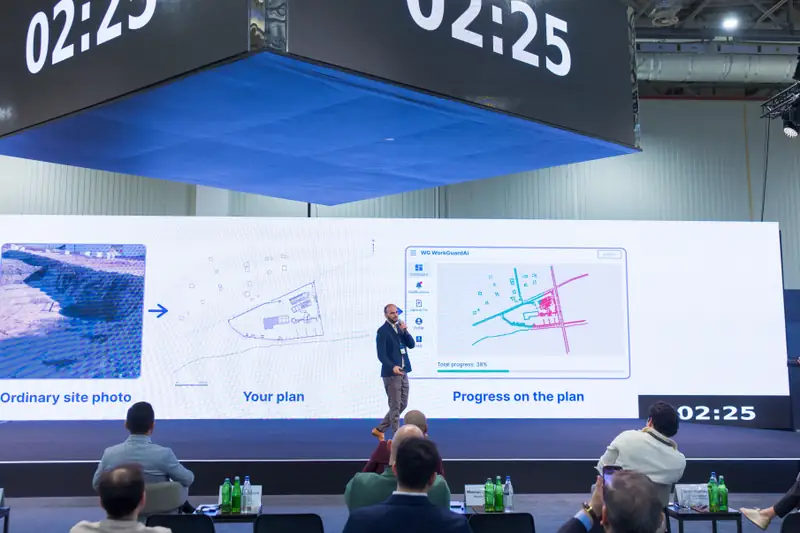
Nga plani te progresi 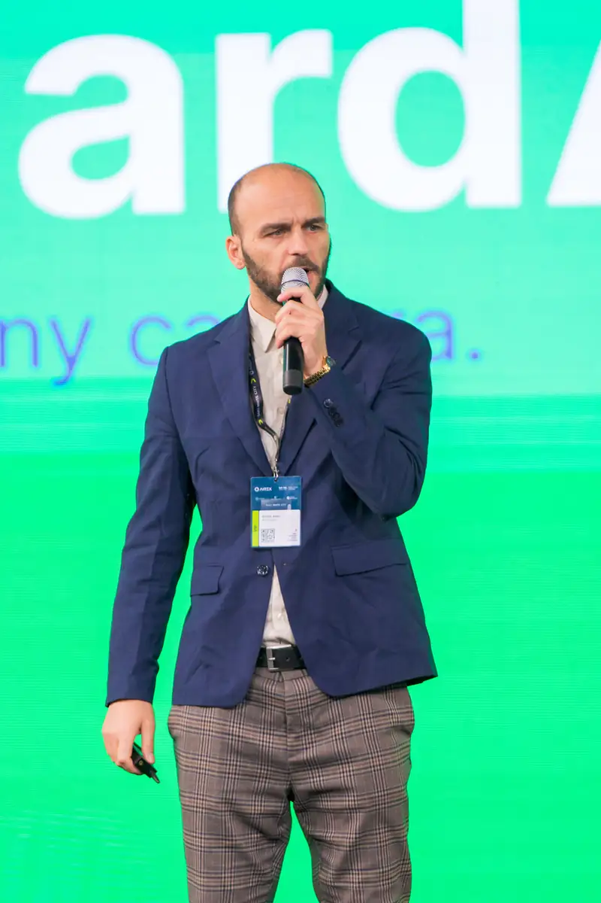
Në mikrofon 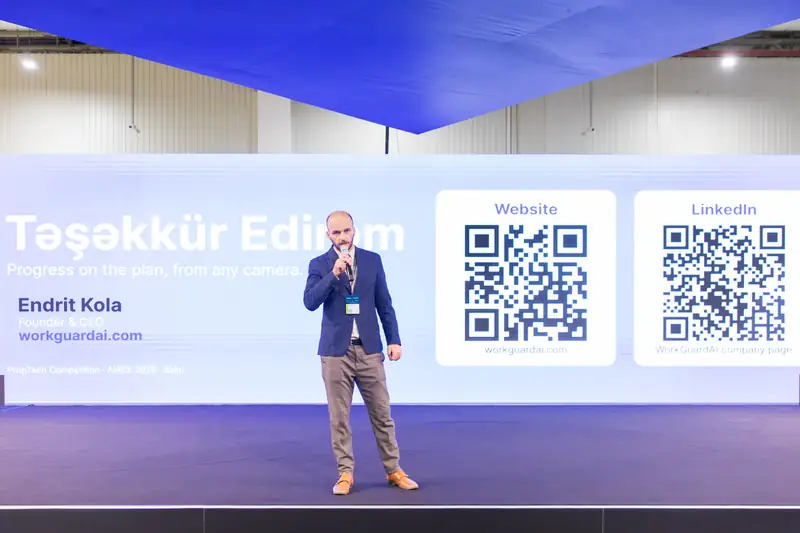
Təşəkkür edirəm 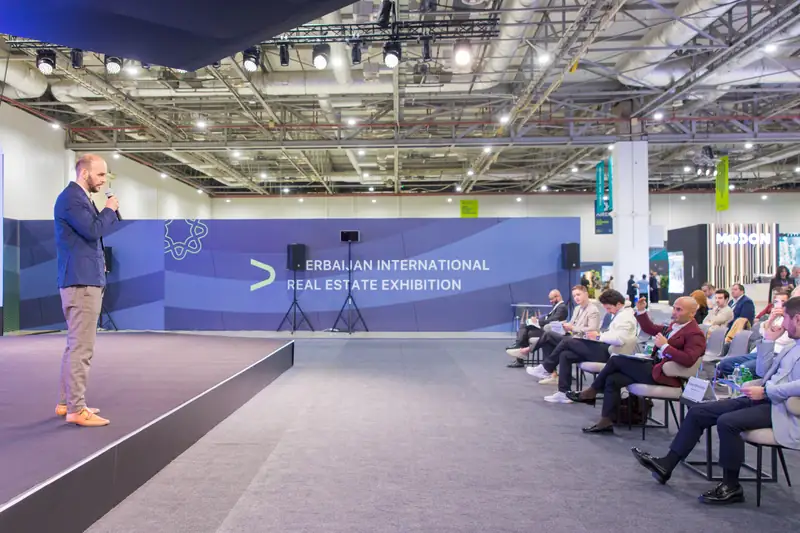
Azerbaijan International Real Estate Exhibition
Faleminderit organizatorëve të AIREX për ftesën dhe mikpritjen, dhe të gjithëve që mbështesin WorkGuardAI.
Ekipi
Njerëzit pas WorkGuardAI.


Kontakti
Po kërkoni zhvillues dhe kontraktorë për një projekt kantieri? Le të flasim.
Kërkojmë kantierin e parë aktiv. Nëse kryeni punime dheu ose infrastrukture dhe keni planet DWG për to, mjafton një telefonatë e shkurtër për të parë nëse një pilot është i përshtatshëm.
- 01Një telefonatë e shkurtër
Ju tregojmë prototipin në një projekt demonstrues dhe kontrollojmë nëse kantieri juaj përshtatet: punime dheu ose infrastrukture, plane DWG dhe dikush që mund të bëjë foto.
- 02Një fushëveprim i shkruar
Një kantier, një periudhë e caktuar dhe trajtim i qartë i të dhënave, të rëna dakord në një marrëveshje të shkurtër pilot. Ne ngarkojmë planin tuaj DWG dhe krijojmë aksesin për ekipin tuaj.
- 03Testi në terren dhe rishikimi
Ekipi juaj bën foto në koordinatat e planit. Ne kontaktojmë çdo javë dhe krahasojmë rezultatet me matjet tuaja. Ju merrni një raport të shkruar me rezultatet.